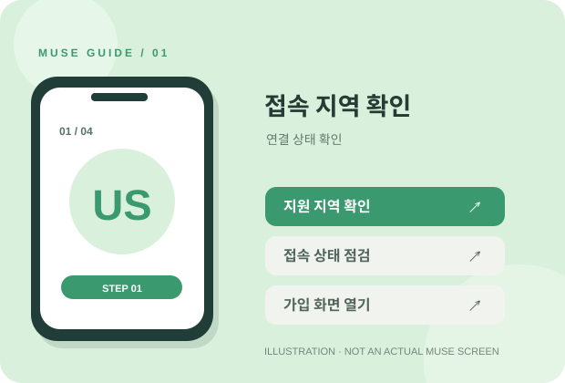
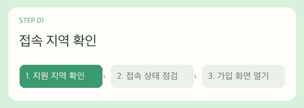
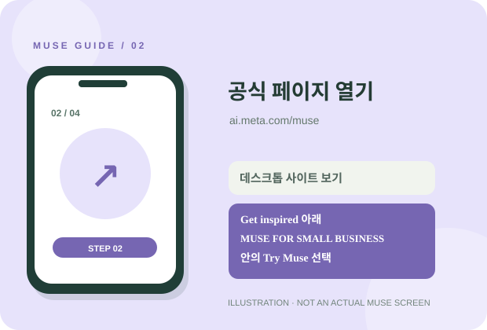
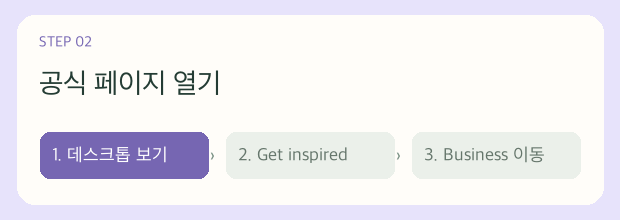
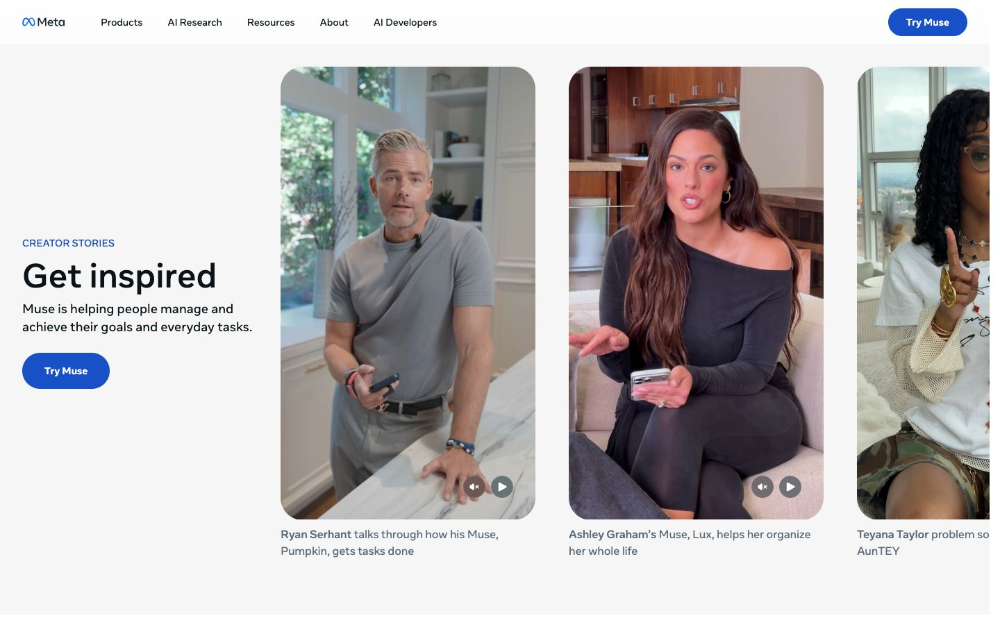
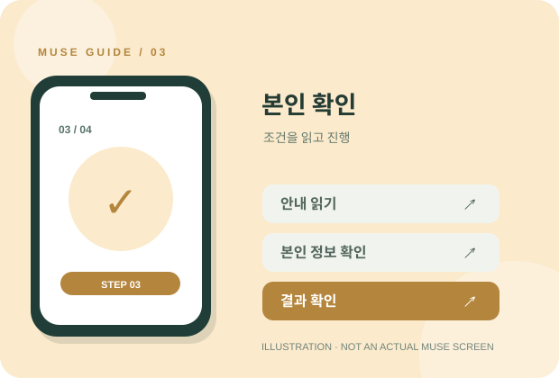
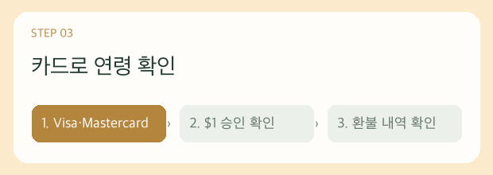
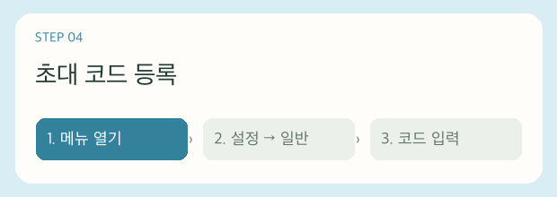

스마트폰 또는 PC
공식 가입 페이지에 접속할 수 있는 브라우저를 준비하세요. 화면 구성은 기기에 따라 다를 수 있습니다.
KOREAN QUICK GUIDE 2026.10
Meta의 AI 에이전트 Muse를 알아보고 계신가요? 공식 페이지를 여는 방법부터 초대 코드 입력 위치까지, 모바일 화면을 기준으로 순서대로 안내합니다.
개인 안내 페이지입니다. Meta 또는 Muse의 공식 운영 페이지가 아닙니다.
가입 화면을 열기 전에 이 세 가지를 확인해 두면 진행하기 편합니다.
공식 가입 페이지에 접속할 수 있는 브라우저를 준비하세요. 화면 구성은 기기에 따라 다를 수 있습니다.
가입에 사용할 이메일이나 Meta 계정에 접근할 수 있는지 확인하세요. 실제 요구되는 로그인 방식은 화면 안내를 따르세요.
본인의 초대 코드가 있다면 미리 복사해 두세요. 코드 입력 가능 여부와 보상은 Muse에서 직접 확인해야 합니다.
참고 글의 흐름을 바탕으로 새로 쓴 설명입니다. 화면 예시는 이해를 돕기 위해 제작한 그림이며 실제 서비스 화면과 다를 수 있습니다.
참고 글은 스마트폰의 VPN 앱에서 미국 서버를 선택한 뒤 연결 여부를 점검하는 방법을 소개합니다. Muse의 지원 지역과 이용 약관을 먼저 읽고 접속 방법을 결정하세요.


STEP 01의 미국 VPN 연결을 유지한 상태에서 스마트폰의 Chrome 또는 Edge로 ai.meta.com/muse에 접속하세요. 브라우저 메뉴의 데스크톱 사이트 보기를 켜고 웹페이지에서 가입을 진행하는 것이 핵심입니다.
상단이나 Get inspired 구역의 일반 Try Muse는 스마트폰에서 앱스토어로 이어질 수 있습니다. 이 안내에서는 앱을 설치하지 말고 데스크톱 보기 상태에서 MUSE FOR SMALL BUSINESS의 버튼을 선택하세요.



실제 화면 출처: Meta Muse 공식 페이지 ↗ · 사이트 구성은 변경될 수 있습니다.
가입 도중 연령이나 결제 수단 확인 화면이 나올 수 있습니다. 화면에 적힌 금액, 승인 방식, 취소·환불 조건을 확인한 뒤 본인에게 맞는 방법으로 진행하세요.


아래 사진 네 장은 파일명에 기록된 촬영 시간 순서입니다. Muse 웹 화면에서 왼쪽 위 메뉴 → 설정 → 일반로 이동하는 경로를 보여 줍니다.

아래 실제 사진을 순서대로 따라가세요. 사진을 누르면 크게 볼 수 있습니다.
대화 화면에서 왼쪽 위의 세 줄 메뉴를 누릅니다.

메뉴가 열리면 ‘설정’을 누릅니다.

설정 목록 맨 위의 ‘일반’을 엽니다.

‘추가 토큰’ 잔액이 표시된 모습입니다. 이 사진에는 코드 입력란이 보이지 않습니다.

이 페이지는 가입 절차를 안내합니다. 계정 생성, 코드 등록, 혜택 확인은 모두 Muse 공식 서비스에서 진행됩니다.
페이지 운영자의 코드가 아직 등록되지 않았습니다. 코드 없이도 공식 사이트를 방문할 수 있습니다.
이 코드를 사용하면 페이지 운영자에게도 추천 혜택이 제공될 수 있습니다.
Meta의 2026년 9월 공식 발표에서는 미국 출시를 안내합니다. 한국 이용 가능 여부와 대기 등록 여부는 공식 가입 화면에서 확인해 주세요.
보상 수량과 지급 조건은 공식 Muse 화면에 표시되는 내용이 기준입니다. 이 페이지는 특정 수량의 토큰 지급을 보장하지 않습니다.
결제 화면의 조건과 카드사 거래 내역을 확인하세요. 청구나 환불 문제는 Muse 공식 지원 채널과 카드사에 문의하는 것이 정확합니다.